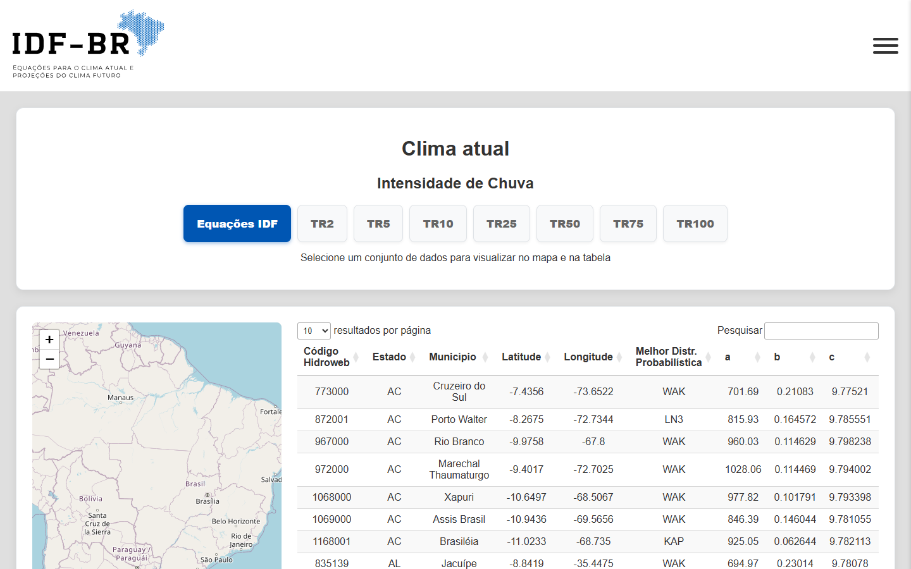
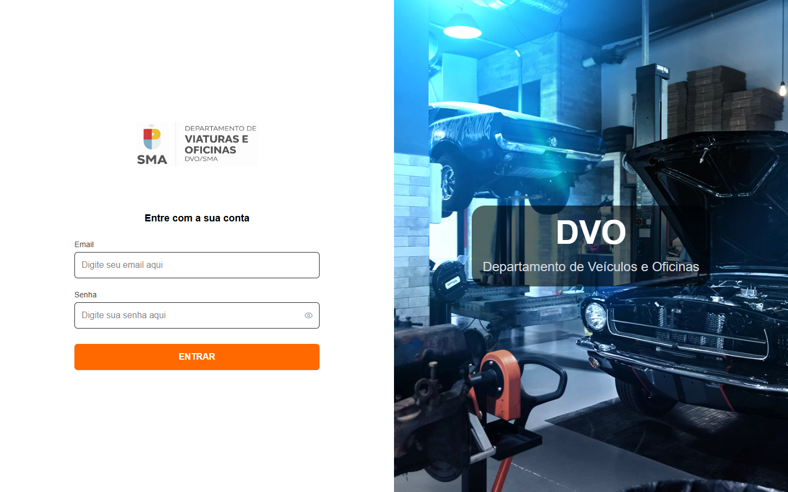
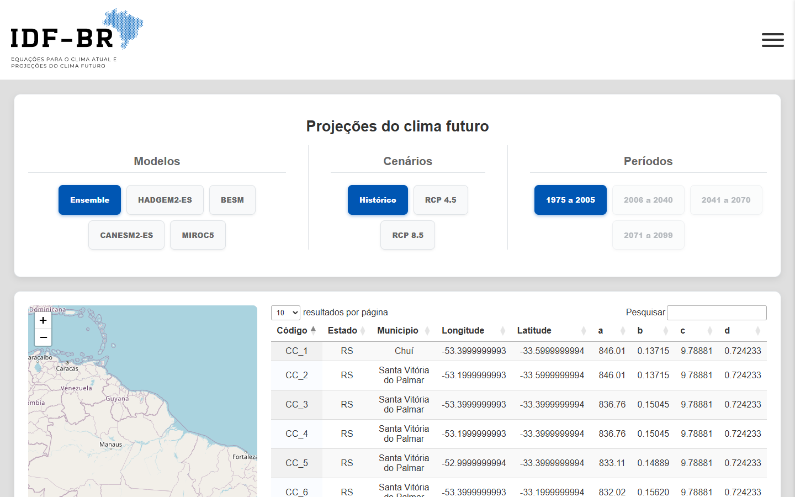
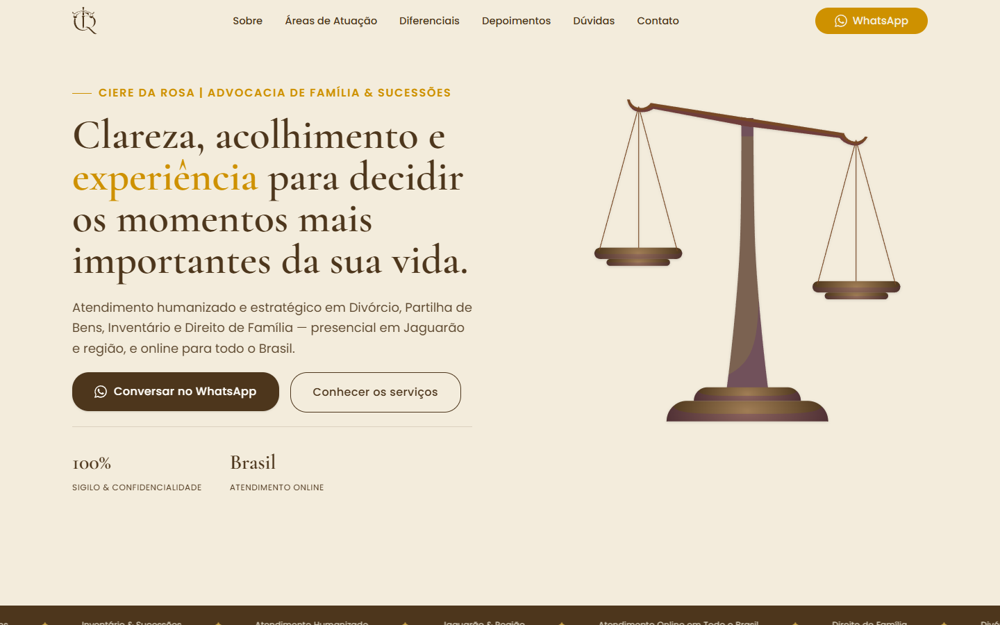
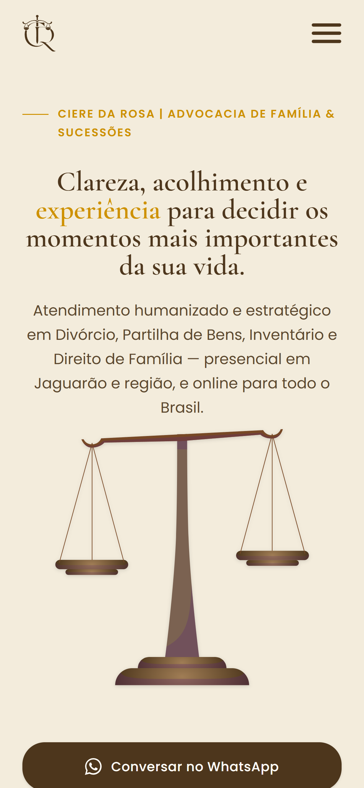

Da pesquisa ao produto.
From research to product.
Estudante de Ciência da Computação na UFPel. Lidero projetos na Hut 8 e pesquiso no NIP.
Computer Science student at UFPel. I lead projects at Hut 8 and research at NIP.


Transformando pesquisa hidrológica nacional em uma ferramenta digital utilizável.
Turning nationwide hydrological research into a usable digital tool.
idf-br.com.br ↗O time científico definiu os dados, as equações e os resultados esperados. Eu respondi pela camada de software: escolhi as ferramentas, tomei as decisões técnicas, desenhei a arquitetura, a estrutura da aplicação, o fluxo e a interface, converti o acervo de planilhas em dados estruturados e fiz o deploy.
The scientific team defined the data, equations, and expected results. I was responsible for the software layer: I chose the tools, made technical decisions, designed the architecture, application structure, flow, and interface, converted the collection of spreadsheets into structured data, and deployed it.
Pesquisa científica → dados brutos → dados estruturados → software → produto utilizável
Scientific research → raw data → structured data → software → usable product
1.543
1,543
usuários ativos no primeiro mês no ar (28 dias)
active users in the first month live (28 days)
+2.000
2,000+
acessos de 16 países no primeiro mês no ar (28 dias)
visits from 16 countries in the first month live (28 days)
3.225
3,225
estações Hidroweb, em 2.062 municípios das 27 UFs
Hidroweb stations, in 2,062 municipalities across all 27 federative units
475.928
475,928
equações IDF no total
IDF equations in total

Levando um projeto de cliente dos requisitos à produção.
Taking a client project from requirements to production.
dvopelotas.com.br ↗O sistema foi construído pelo squad da Hut 8. Meu papel foi coordenação, escopo e apoio à entrega.
The system was built by the Hut 8 squad. My role was coordination, scoping and delivery support.
- CLIENTE
- CLIENT
- REQUISITOS
- REQUIREMENTS
- ESCOPO
- SCOPE
- PRECIFICAÇÃO
- PRICING
- SQUAD
- QA
- INFRAESTRUTURA
- INFRASTRUCTURE
- PRODUÇÃO
- PRODUCTION
- 01 BANCO DE DADOSDATABASE configuraçãosetup
- 02 BUCKETBUCKET armazenamentostorage
- 03 APIAPI deploydeployment
- 04 FRONTENDFRONTEND deploydeployment
Conectando necessidades do cliente, decisões de design e desenvolvimento.
Connecting client needs, design decisions and development.
advocaciacieredarosa.com.br ↗- CLIENTE
- CLIENT
- AUGUSTO
- DESIGN
- DEV
Para um escritório de advocacia, ser encontrado é parte do produto. Além do SEO clássico, o projeto exigiu atenção a GEO: como o escritório é descrito, citado e recuperado por modelos de linguagem, e não só por buscadores. Isso mudou decisões de estrutura de conteúdo, nomenclatura das páginas e dados estruturados.
For a law firm, being found is part of the product. Beyond classic SEO, the project required attention to GEO: how the firm is described, cited and retrieved by language models, not only by search engines. That shaped decisions about content structure, page naming and structured data.


Testando quando machine learning quântico realmente faz diferença.
Testing when quantum machine learning actually makes a difference.
O QML tem desempenho melhor simplesmente por usar representações quânticas, ou o desempenho depende do alinhamento entre dados, feature maps e kernels?
Does QML perform better simply because it uses quantum representations, or does performance depend on the alignment between data, feature maps and kernels?
DADOS REAISREAL DATA
Breast Cancer Wisconsin
O SVM clássico e a configuração quântica alcançaram resultados comparáveis na representação controlada. Sem vantagem quântica clara.
Classical SVM and the quantum configuration achieved comparable results in the controlled representation. No clear quantum advantage.
DADOS SINTÉTICOSSYNTHETIC DATA
Qiskit ad_hoc_data
O modelo quântico teve desempenho excelente, mas o conjunto de dados foi desenhado em torno de uma representação quântica compatível.
The quantum model performed extremely well, but the dataset was designed around a compatible quantum representation.
DADOS + REPRESENTAÇÃO + FEATURE MAP + KERNEL = RESULTADO
DATA + REPRESENTATION + FEATURE MAP + KERNEL = OUTCOME
Aprendendo a fazer projetos acontecerem por pessoas, não só por código.
Learning to make projects happen through people, not just code.
Assumir responsabilidade antes de me sentir pronto, para garantir a continuidade da organização.
Taking ownership before feeling ready, to ensure the organization's continuity.
Entrei buscando experiência prática, em um período de baixa atividade da empresa júnior. Quando a continuidade ficou ameaçada, assumi a liderança. Tive de aprender a lidar com clientes, definir requisitos, precificar escopos, formar squads, coordenar design e desenvolvimento, conduzir QA, provisionar infraestrutura e, por fim, entregar.
I joined seeking practical experience during a period of low activity at the junior enterprise. When continuity was threatened, I stepped up into leadership. I had to learn how to handle clients, define requirements, price scopes, build squads, coordinate design and development, manage QA, provision infrastructure, and finally deliver.
De software científico à pesquisa em IA aplicada.
From scientific software to applied AI research.
- SOFTWARE CIENTÍFICO
- SCIENTIFIC SOFTWARE
- IDF-BR
- IA APLICADA A RECURSOS HÍDRICOS
- AI APPLIED TO WATER RESOURCES
- EXPERIMENTAÇÃO
- EXPERIMENTATION
- PESQUISA
- RESEARCH
- ESCRITA ACADÊMICA
- ACADEMIC WRITING
- FERRAMENTAS PÚBLICAS NO FUTURO
- FUTURE PUBLIC-FACING TOOLS
Comecei como pesquisador de graduação, e minha primeira grande entrega foi o software IDF-BR. Depois de uma formação sobre IA aplicada a recursos hídricos, em janeiro de 2026, meu foco passou a se aproximar de machine learning, experimentação e escrita acadêmica. O objetivo de longo prazo é transformar pesquisa complexa em ferramentas acessíveis fora da universidade.
Starting as an undergraduate research fellow, my first major delivery was the IDF-BR software. Following a specialized training on AI for water resources in January 2026, my focus shifted toward machine learning, experimentation, and academic writing. The long-term goal is to turn complex research into accessible tools outside the university.
Me interessa o que acontece entre "temos um problema" e "isso realmente funciona".
I'm interested in what happens between "we have a problem" and "this actually works."
Sou estudante de Ciência da Computação na UFPel, e a maior parte do que moldou meu jeito de trabalhar aconteceu quando a tecnologia precisou encontrar um problema real.
I'm a Computer Science student at UFPel, and most of what has shaped the way I work has happened when technology had to meet a real problem.
No NIP, isso significa transformar pesquisa em software e estudar IA aplicada. Na Hut 8, significa transformar necessidades de clientes em projetos que times conseguem de fato entregar.
At NIP, that means turning research into software and studying applied AI. At Hut 8, it means turning client needs into projects that teams can actually deliver.
O contexto muda, mas a parte de que gosto continua a mesma: entender um problema pouco claro e, aos poucos, transformá-lo em algo útil.
The context changes, but the part I enjoy remains the same: understanding an unclear problem and gradually turning it into something useful.
Ainda estou no começo da carreira, e quero seguir aprofundando minha base técnica enquanto melhoro em tomar decisões, comunicar com clareza e ajudar pessoas a construir juntas.
I'm still early in my career, and I want to keep deepening my technical foundation while becoming better at making decisions, communicating clearly and helping people build together.
Tem um problema que vale construir em volta?
Have a problem worth building around?
Estou aberto a conversas sobre software, IA aplicada, pesquisa, projetos de tecnologia e novas oportunidades.
I'm open to conversations about software, applied AI, research, technology projects and new opportunities.